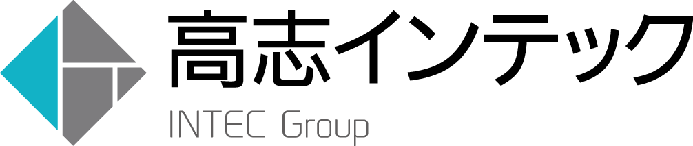

こんにちは世界！
Rails Girls が、富山で初めて開催されます!
そこで、Rails Girls Toyamaのワークショップの参加者を募集します。
Ruby on Railsのすてきな世界を体験してみませんか？ワークショップは無料です。
Hello world!
Rails Girls Toyama is going to be held first
Join the crash-course and learn how to build web applications using Ruby on Rails, and we'll dive into the magical world of Ruby on Rails.
概要 コーチに教えてもらいながらプログラムを設計して、プロトタイプを作り、コーディングします。今回のワークショップではグループで「おみくじアプリ」を制作します。
必要なもの やる気とキラリと光るイマジネーションを持ってきてください！コンピュータは学校のものを使用するので必要ありません。もしiPadをお持ちでしたら、Keynoteをインストールしてご持参ください。
| 9:30 - 9:50 |
レジストレーション、開会Ruby on RailsとAtomのインストール、オーガナイザーから1日の流れを説明します。 |
|---|---|
| 9:50 - 13:00 |
ワークショップ（1） |
| 13:00 - 13:30 |
ランチ・タイム |
| 13:00 - 15:30 |
ワークショップ（2） |
| 15:40 - 16:20 |
プレゼンテーション作ったアプリをプレゼンで紹介しましょう！ |
| 16:20 - 16:30 | クロージング最後に全員で記念撮影！ワークショップで聞き損ねたことやRubyやRailsのこと、ステップアップの方法など、コーチに気軽に質問してみましょう。 |
参加申し込みは終了しました。たくさんの応募、ありがとうございました。
RailsGirls イベントへの引き続きご支援のお申し出を募集しています。
株式会社高志インテック は、北陸に根ざし地域に密着したきめ細かいITサービスを提供することを目的としています。今回の「Rails Girls in TOYAMA 1st」に参加して、地域に貢献いたします。
 GitHub はソフトウェアの共同開発をするための最高の環境を開発・提供しています。1000 万人以上のユーザーが友だち、同僚、クラスメートと、時にはまったく知らない人とでさえ、コードなどを共有して素晴らしいプロジェクトを行っています。
GitHub はソフトウェアの共同開発をするための最高の環境を開発・提供しています。1000 万人以上のユーザーが友だち、同僚、クラスメートと、時にはまったく知らない人とでさえ、コードなどを共有して素晴らしいプロジェクトを行っています。
 日本Rubyの会は、Rubyの利用者の支援とRuby(とRubyのライブラリ)開発者の支援を目的とした一般社団法人です。現在は、ドキュメントの整備や、イベントへの参加協力等を中心に活動しています。
日本Rubyの会は、Rubyの利用者の支援とRuby(とRubyのライブラリ)開発者の支援を目的とした一般社団法人です。現在は、ドキュメントの整備や、イベントへの参加協力等を中心に活動しています。
参加費はどのくらいかかりますか？ 無料です。申し込むときにはわくわくした気持ちだけあればいいです。
どのような人が参加するのでしょうか？ コンピュータを使ったことがある女性ならだれでも参加できます。